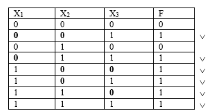

Тема: переход от таблицы истинности к логической формуле.
Дидактическая цель: закрепить теоретические знания по основам математической логики и выработать практические навыки по записи логической формулы по таблице истинности: СДНФ и СКНФ.
Литература:
- Еловенко Н.А. Дискретная математика. Учебное пособие. – Волгоград. ГОУ СПО ВЭТК. 2008. Главы 2, 3.;
Ход занятия:
- Проверка теоретической подготовки студентов (три булевы операции: обозначение в формуле и на схеме, таблицы истинности, три вида представления логической функции).
- Инструктаж преподавателя о ходе выполнения работы.
- Выполнение работы с использованием методических указаний по вариантам.
- Защита практической работы с ответами на контрольные вопросы (устно).
- Подведение итогов и оценка работы каждого студента.
Порядок выполнения работы:
- Ознакомиться с примером решения.
- Решить задания, соблюдая порядок оформления примера и оформить отчет (номер, тема и цель практической работы, решение задания по варианту, вывод).
- Подготовить ответы на контрольные вопросы (устно), сделать вывод и предъявить отчет преподавателю.
Примеры решения:
1. Составить СДНФ и СКНФ по таблице истинности для функции.
2. Для СДНФ: помечаем строки, где функция истинна (равна 1), сколько единиц - столько слагаемых в СДНФ, каждое слагаемое содержит все аргументы, между которыми стоит амперсанд.
F= х1 &х2 &х3 х1 &х2 &х3 х1 &х2 &х3 х1 &х2 &х3 х1 &х2 &х3 х1 &х2 &х3
4. Для СКНФ: помечаем строки, где функция ложна (равна 0), сколько нулей - столько сомножителей в СКНФ, каждый сомножитель содержит все аргументы, между которыми стоит логическое сложение.
 5. Записываем формулу, если аргумент в данной строке равен единице, то в соответствующем слагаемом в формуле он записывается с инверсией
5. Записываем формулу, если аргумент в данной строке равен единице, то в соответствующем слагаемом в формуле он записывается с инверсией
F= (х1х2х3)&(х1х2х3)
Задание: составить формулы СДНФ и СКНФ по таблице истинности для двух функций

2. Для СДНФ: помечаем строки, где функция истинна (равна 1), сколько единиц - столько слагаемых в СДНФ, каждое слагаемое содержит все аргументы, между которыми стоит амперсанд.

3. Записываем формулу, если аргумент в данной строке равен нулю, то в соответствующем слагаемом в формуле он записывается с инверсией F= х1 &х2 &х3 х1 &х2 &х3 х1 &х2 &х3 х1 &х2 &х3 х1 &х2 &х3 х1 &х2 &х3
4. Для СКНФ: помечаем строки, где функция ложна (равна 0), сколько нулей - столько сомножителей в СКНФ, каждый сомножитель содержит все аргументы, между которыми стоит логическое сложение.
F= (х1х2х3)&(х1х2х3)
Задание: составить формулы СДНФ и СКНФ по таблице истинности для двух функций
Контрольные вопросы:
- Описать процесс перехода из одного вида представления логической функции в другой, описать совершенные формы представления логической функции и процесс их записи.